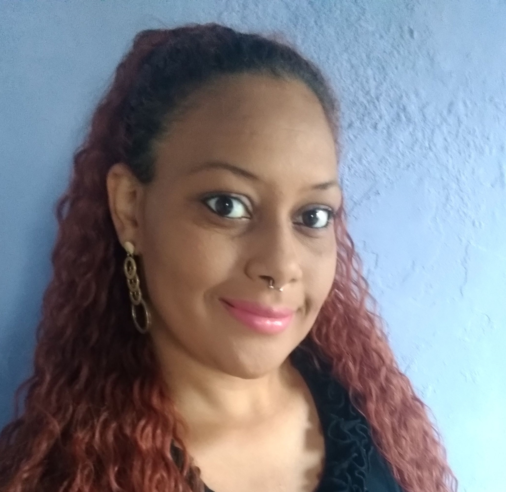

<!DOCTYPE htmal>
<htmal>
	<head>
       
        <meta charset="UTF-8">
		<meta http-equiva="X-UA-Compatible" content="IE=edge">
		<meta name="viewport" content="width=device-width, initial-scalet=1.0">
        <title> Wanessa Costa da Silva</title>
        <link rel="stylesheet" href="index.css">
        <script src="index.js" defer></script>
        
    </head>
    <body onLoad="window.alert('Obrigada pela visita! Se gostar de algo, entre em contato pelas redes sociais.')"></body>
      
        <div class="container.principal">
            <nav>
                <ul>                  
                <li>
                        <a href="Formulario.html">Formulário</a>
                        </li>
                    <li>
                    <a href="Projetos.html">Projetos</a>
                    </li>
                 
                </ul>
               
            </nav>
          
            <div class="center">
                </img>
            </div>
               
              <div class="name">
                <h1>Wanessa Costa</h1>    
                <h4>Desenvolvedora Web (em produção)</h4>
              </div>
           
          
            <main>
                <section class="perfil">
                    <div class="perfil"> 
                           
                
                        <p>
                         Sou uma pessoa curiosa e que gosta de aprender.
                            Se tem algo para ser ensinado,<br> eu sou a primeira da fila 
                            com papel e caneta.<br><br><br>

                        Me adapto rápido nos ambientes e sei ser dinâmica quando preciso.<br>
                        Já trabalhei em empresas com tele atendimento de clientes para<br>
                        retirada de dúvidas e possibilidade de compras de produtos, com análise de faturas <br>
                        e ajuste das mesmas para clientes e com vendas de serviços.<br>
                        Trabalhei na função de auxiliar de bar no atendimento, organização de ambiente, <br>
                        preparação de drinques e coquetéis <br>
                        e vendas no ramo de Hotelaria (Temporário Olimpíadas RIO 2016).
                         </p>


                    </div>
</div>
<div class="center">
    </img>
</div>
<br><br><br><br>
      
<main>
<div class="Formação"></div>
                <section>
    <p>
        <h1>Formação:</h1>
       <p>Ensino Médio Completo, CIEP 311 Dep. Bocayuva Cunha<br>
        (Dezembro de 2007) - Concluído</p> 
        

        <p>Graduação  em Análise e Desenvolvimento de Sistemas, Centro Universitário Favip Wyden<br>
            Término junho de 2025 (Previsão de formatura)<br></p> 


        <h2>Cursos Complementares:</h2>
        
        <h3>* Bartender, Senac *<br> </h3>
        
                                     
        <p> Curso realizado pelo Serviço Nacional de Aprendizagem Comercial<br>
            (Março de 2016) - Concluído <br><br>

            Carga horária de 200hs<br>
            Conteúdo Programático:<br><br>
            - Boas Práticas e manipulação de alimentos<br>
            - Técnicas de Bartender<br>
            - Atendimento de bar<br>
            - Inglês para bares e restaurantes<br>
            - Gerenciamento de estoques e compras<br>
            - Ação Integradora: elaboração de uma carta de bebidas</p>
        <br>
        <h3>* Montagem e Reparação de Microcomputadores *</h3>
        <br>
        <p> Curso realizado pelo Centro de Formação Profissional de Metal Mecânica.<br>
           (Dezembro de 2004) - Concluído<br><br>
        
       
            Carga Horária de 400hs
            <br>
            Conteúdo Programático:<br><br>
            - Sistemas Operacionais<br>
            - Arquitetura de Computadores<br>
            - Fundamentos de Suporte<br>
            - Montagem e Configuração de Microcomputadores/ Prática<br>
            - Manutenção de Computadores e Periféricos/ Prática<br>
            - Tecnologia de Sistemas de Informações<br>
            - Relações Humanas no Trabalho<br>
            - Processos de Gestão de Qualidade - 5S<br>
            - Educação Ambiental - Uso Eficiente de Energia<br>
            - Planejamento e Gestão de Negócios</p>
        
        
    </p>
</section>
   </div>
</section>     
                   
               
            
            <footer class="contato">
               <a href="https://github.com/WanessaCosta26" target="_blank"  rel="noopener noreferrer"          
            a> </img> 
                <p>GitHub</p>
                </a>
                <a href="https://www.linkedin.com/in/wanessa-costa-3157a1233/" target="_blank"  rel="noopener noreferrer"          
            a> </img> 
                <p>Linkedin</p>
                </a>
                <a href="https://wa.me/5521984731947" target="_blank"  rel="noopener noreferrer"          
            a> </img> 
                <p>Whatsapp</p>
                </a>
            </footer>
        
        </div>    
       
        
   	

	</body>
   
</htmal>